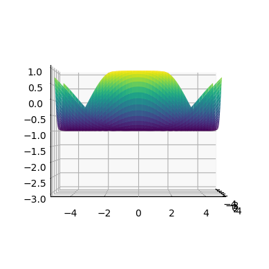
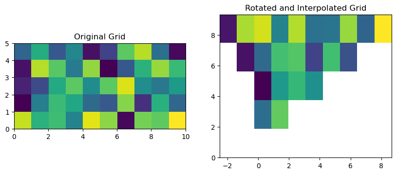

TEST NOTEBOOK#
from utils import find_coeffs, print_code
import inspect
from subprocess import check_output
from IPython.core.display import HTML
output = print_code(find_coeffs)
HTML(output)
def find_coeffs(pa, pb): # https://stackoverflow.com/questions/14177744/how-does-perspective-transformation-work-in-pil
matrix = []
for p1, p2 in zip(pa, pb):
matrix.append([p1[0], p1[1], 1, 0, 0, 0, -p2[0]*p1[0], -p2[0]*p1[1]])
matrix.append([0, 0, 0, p1[0], p1[1], 1, -p2[1]*p1[0], -p2[1]*p1[1]])
A = np.matrix(matrix, dtype=float)
B = np.array(pb).reshape(8)
res = np.dot(np.linalg.inv(A.T * A) * A.T, B)
return np.array(res).reshape(8)
print(inspect.getsource(find_coeffs))
def find_coeffs(pa, pb): # https://stackoverflow.com/questions/14177744/how-does-perspective-transformation-work-in-pil
matrix = []
for p1, p2 in zip(pa, pb):
matrix.append([p1[0], p1[1], 1, 0, 0, 0, -p2[0]*p1[0], -p2[0]*p1[1]])
matrix.append([0, 0, 0, p1[0], p1[1], 1, -p2[1]*p1[0], -p2[1]*p1[1]])
A = np.matrix(matrix, dtype=float)
B = np.array(pb).reshape(8)
res = np.dot(np.linalg.inv(A.T * A) * A.T, B)
return np.array(res).reshape(8)
from utils import find_coeffs
import inspect
from subprocess import check_output
from IPython.core.display import HTML
output = check_output(["pygmentize", "-f", "html", "-O", "noclasses,lineanchors,linenos,style=native", "-l", "python"],
input=inspect.getsource(find_coeffs), encoding='ascii')
# Define a custom CSS class to align the code to the left
custom_css = """
<style>
.code {
text-align: left;
background-color: black; /* Set the background color */
}
</style>
"""
# Embed the code block in a div with the custom CSS class
html_code = f"""
{custom_css}
<div class="code">
{output}
</div>
"""
HTML(html_code)
import matplotlib.pyplot as plt
from mpl_toolkits.mplot3d import Axes3D
import numpy as np
# Create some example data
x = np.linspace(-5, 5, 100)
y = np.linspace(-5, 5, 100)
X, Y = np.meshgrid(x, y)
Z = np.sin(np.sqrt(X**2 + Y**2))
fig = plt.figure()
ax = fig.add_subplot(111, projection='3d')
# Set the view angles using view_init
ax.view_init(azim=0, elev=0)
# Set the view coordinates by adjusting the axis limits
ax.set_xlim(-5, 5)
ax.set_ylim(-5, 5)
ax.set_zlim(-3, 1)
# Plot the 3D surface
ax.plot_surface(X, Y, Z, cmap='viridis')
plt.show()

def generate_range(mean, height):
# Calculate the lower and upper bounds for the range
lower_bound = min(0, 2*mean - height)
upper_bound = max(height, 2*mean)
# Return the range as a tuple
return (lower_bound, upper_bound)
mean_value = -2
height_value = 10
result_range = generate_range(mean_value, height_value)
print(result_range)
(-14, 10)
from subprocess import check_output
from IPython.display import HTML
import inspect
def pygmentize_source_code(source_code, language="python"):
# Define the Pygmentize command and arguments
command = ["pygmentize", "-f", "html", "-O", "noclasses, lineanchors,style=native", "-l", language]
# Get the HTML output using check_output
output = check_output(command, input=source_code, encoding="ascii")
# Display the HTML using IPython.display
return HTML(output)
# Example usage:
# def find_coeffs(x, y):
# return x + y
source_code = inspect.getsource(find_coeffs)
html_output = pygmentize_source_code(source_code, language="python")
html_output
def find_coeffs(pa, pb): # https://stackoverflow.com/questions/14177744/how-does-perspective-transformation-work-in-pil
matrix = []
for p1, p2 in zip(pa, pb):
matrix.append([p1[0], p1[1], 1, 0, 0, 0, -p2[0]*p1[0], -p2[0]*p1[1]])
matrix.append([0, 0, 0, p1[0], p1[1], 1, -p2[1]*p1[0], -p2[1]*p1[1]])
A = np.matrix(matrix, dtype=float)
B = np.array(pb).reshape(8)
res = np.dot(np.linalg.inv(A.T * A) * A.T, B)
return np.array(res).reshape(8)
import numpy as np
def calculate_points(direction, radius, turbine_origin):
angle = np.deg2rad(direction) # Convert direction to radians if necessary
x_offset = radius * np.cos(angle)
y_offset = radius * np.sin(angle)
point1 = np.array([turbine_origin[0] - x_offset, turbine_origin[1] - y_offset, 0])
point2 = np.array([turbine_origin[0] + x_offset, turbine_origin[1] + y_offset, 0])
return point1, point2
# Example usage:
direction = 180 # Angle in degrees
radius = 10 # Radius
turbine_origin = np.array([0, 0, 0]) # Origin point
point1, point2 = calculate_points(direction, radius, turbine_origin)
print("Point 1:", point1)
print("Point 2:", point2)
Point 1: [ 1.0000000e+01 -1.2246468e-15 0.0000000e+00]
Point 2: [-1.0000000e+01 1.2246468e-15 0.0000000e+00]
import numpy as np
object_position = np.array([1, -1]) # Replace with your own vector
scale_factor = 1
def object_frame_boundaries(object_position, scale_factor):
object_position_normalized = object_position / np.linalg.norm(object_position)
# Calculate two perpendicular vectors with a total length of 1
perpendicular_vector1 = np.array([-object_position_normalized[1], object_position_normalized[0]])
perpendicular_vector2 = np.array([object_position_normalized[1], -object_position_normalized[0]])
# Scale the perpendicular vectors to have a total length of scale_factor
scale_factor = 1 / np.linalg.norm(perpendicular_vector1)
perpendicular_vector1 *= scale_factor
perpendicular_vector2 *= scale_factor
# Calculate the end positions of the perpendicular vectors
end_position1 = object_position + perpendicular_vector1
end_position2 = object_position + perpendicular_vector2
return end_position1, end_position2
end_position1, end_position2 = object_frame_boundaries(object_position, scale_factor)
print("End position of perpendicular vector 1:", end_position1)
print("End position of perpendicular vector 2:", end_position2)
End position of perpendicular vector 1: [ 1.70710678 -0.29289322]
End position of perpendicular vector 2: [ 0.29289322 -1.70710678]
import numpy as np
object_position = np.array([2, -2.0]) # Replace with your own vector
scale_factor = 5
def object_frame_boundaries(object_position, scale_factor):
perp_vector = np.array([-object_position[1], object_position[0]])
perp_vector = perp_vector/(np.linalg.norm(perp_vector) / scale_factor)
return object_position + perp_vector, object_position - perp_vector
end_position1, end_position2 = object_frame_boundaries(object_position, scale_factor)
print("End position of perpendicular vector 1:", end_position1)
print("End position of perpendicular vector 2:", end_position2)
End position of perpendicular vector 1: [5.53553391 1.53553391]
End position of perpendicular vector 2: [-1.53553391 -5.53553391]
import cython_test
---------------------------------------------------------------------------
ModuleNotFoundError Traceback (most recent call last)
Cell In[10], line 1
----> 1 import cython_test
ModuleNotFoundError: No module named 'cython_test'
import numpy as np
def power_number(arr, power):
return arr ** power
print(power_number(np.array([2.2, 23]), 99))
[7.94045523e+033 6.47225718e+134]
import numpy as np
import sys
sys.path.insert(0, './cython')
import power
power.power(np.array([2.2, 23]), 99)
array([7.94045523e+033, 6.47225718e+134])
%load_ext line_profiler
%lprun -f solve_shadow_map solve_shadow_map(terrain_elevation_map, ray_vec, ray_point, grid_element_size)
40.1 ns ± 0.0215 ns per loop (mean ± std. dev. of 7 runs, 10,000,000 loops each)
import numpy as np
"""
"""
def rayBoxIntersection(origin, direction, vmin, vmax):
box = (vmin, vmax)
flag = 0
tmin = 0
if direction[0] >= 0:
tmin = (vmin[0] - origin[0]) / direction[0]
tmax = (vmax[0] - origin[0]) / direction[0]
else:
tmin = (vmax[0] - origin[0]) / direction[0]
tmax = (vmin[0] - origin[0]) / direction[0]
if (direction[1] >= 0):
tYmin = (vmin[1] - origin[1]) / direction[1]
tYmax = (vmax[1] - origin[1]) / direction[1]
else:
tYmin = (vmax[1] - origin[1]) / direction[1]
tYmax = (vmin[1] - origin[1]) / direction[1]
if (tmin > tYmax) or (tYmin > tmax):
tmin = -1
return (flag, tmin)
if tYmin > tmin:
tmin = tYmin
if tYmax < tmax:
tmax = tYmax
if direction[2] >= 0:
tZmin = (vmin[2] - origin[2]) / direction[2]
tZmax = (vmax[2] - origin[2]) / direction[2]
else:
tZmin = (vmax[2] - origin[2]) / direction[2]
tZmax = (vmin[2] - origin[2]) / direction[2]
if (tmin > tZmax) or (tZmin > tmax):
tmin = -1
return (flag, tmin)
if tZmin > tmin:
tmin = tZmin
if tZmax < tmax:
tmax = tZmax
flag = 1
return (flag, tmin)
def amanatidesWoo(origin, direction, grid3D, verbose=True):
flag, tmin = rayBoxIntersection(origin, direction, grid3D['minBound'], grid3D['maxBound'])
if flag == 0:
print('The ray does not intersect the grid')
pass
else:
if tmin < 0:
tmin = 0
start = origin + tmin * direction
boxSize = grid3D['maxBound'] - grid3D['minBound']
if verbose:
# plot start[0], start[1], start[2]
pass
x = np.floor(((start[0] - grid3D['minBound'][0]) / boxSize[0]) * grid3D['nx']) + 1
y = np.floor(((start[1] - grid3D['minBound'][1]) / boxSize[1]) * grid3D['ny']) + 1
z = np.floor(((start[2] - grid3D['minBound'][2]) / boxSize[2]) * grid3D['nz']) + 1
if x == grid3D['nx'] + 1:
x -= 1
if y == grid3D['ny'] + 1:
y -= 1
if z == grid3D['nz'] + 1:
z -= 1
if direction[0] >= 0:
tVoxelX = x / grid3D['nx']
stepX = 1
else:
tVoxelX = (x - 1) / grid3D['nx']
stepX = -1
if direction[1] >= 0:
tVoxelY = y / grid3D['ny']
stepY = 1
else:
tVoxelY = (y - 1) / grid3D['ny']
stepY = -1
if direction[2] >= 0:
tVoxelZ = z / grid3D['nz']
stepZ = 1
else:
tVoxelZ = (z - 1) / grid3D['nz']
stepZ = -1
voxelMaxX = grid3D['minBound'][0] + tVoxelX*boxSize[0]
voxelMaxY = grid3D['minBound'][1] + tVoxelY*boxSize[1]
voxelMaxZ = grid3D['minBound'][2] + tVoxelZ*boxSize[2]
tMaxX = tmin + (voxelMaxX - start[0]) / direction[0]
tMaxY = tmin + (voxelMaxY - start[1]) / direction[1]
tMaxZ = tmin + (voxelMaxZ - start[2]) / direction[2]
voxelSizeX = boxSize[0] / grid3D['nx']
voxelSizeY = boxSize[1] / grid3D['ny']
voxelSizeZ = boxSize[2] / grid3D['nz']
tDeltaX = voxelSizeX / abs(direction[0])
tDeltaY = voxelSizeY / abs(direction[1])
tDeltaZ = voxelSizeZ / abs(direction[2])
while (x <= grid3D['nx']) and (x >= 1) and (y <= grid3D['ny']) and (y >= 1) and (z <= grid3D['nz']) and (z >= 1):
if verbose:
print(f'Intersection: voxel = ({x} {y} {z})')
# Check if voxel (x, y, z) contains any intersection with the ray
# if {intersection}:
# break
if tMaxX < tMaxY:
if tMaxX < tMaxZ:
x = x + stepX
tMaxX = tMaxX + tDeltaX
else:
z = z + stepZ
tMaxZ = tMaxZ + tDeltaZ
else:
if tMaxY < tMaxZ:
y = y + stepY
tMaxY = tMaxY + tDeltaY
else:
z = z + stepZ
tMaxZ = tMaxZ + tDeltaZ
origin = np.array([5, 5, 15])
direction = np.array([0.1, 0.1, -1])
grid3D = {"minBound" : np.array([0, 0, 0]),
"maxBound" : np.array([10, 10, 10]),
"nx" : 10,
"ny" : 10,
"nz" : 10}
# visited_vox = amanatidesWoo(origin, direction, grid3D, verbose=True)
# %load_ext line_profiler
%lprun -f amanatidesWoo amanatidesWoo(origin, direction, grid3D, verbose=True)
Intersection: voxel = (6.0 6.0 10.0)
Intersection: voxel = (6.0 6.0 9.0)
Intersection: voxel = (6.0 6.0 8.0)
Intersection: voxel = (6.0 6.0 7.0)
Intersection: voxel = (6.0 6.0 6.0)
Intersection: voxel = (6.0 6.0 5.0)
Intersection: voxel = (6.0 7.0 5.0)
Intersection: voxel = (7.0 7.0 5.0)
Intersection: voxel = (7.0 7.0 4.0)
Intersection: voxel = (7.0 7.0 3.0)
Intersection: voxel = (7.0 7.0 2.0)
Intersection: voxel = (7.0 7.0 1.0)
Timer unit: 1e-09 s
Total time: 0.000581853 s
File: /tmp/ipykernel_876/179161765.py
Function: amanatidesWoo at line 55
Line # Hits Time Per Hit % Time Line Contents
==============================================================
55 def amanatidesWoo(origin, direction, grid3D, verbose=True):
56 1 22769.0 22769.0 3.9 flag, tmin = rayBoxIntersection(origin, direction, grid3D['minBound'], grid3D['maxBound'])
57
58 1 1466.0 1466.0 0.3 if flag == 0:
59 print('The ray does not intersect the grid')
60 pass
61 else:
62 1 1467.0 1467.0 0.3 if tmin < 0:
63 tmin = 0
64
65 1 288167.0 288167.0 49.5 start = origin + tmin * direction
66 1 3283.0 3283.0 0.6 boxSize = grid3D['maxBound'] - grid3D['minBound']
67
68 1 1397.0 1397.0 0.2 if verbose:
69 # plot start[0], start[1], start[2]
70 1 1467.0 1467.0 0.3 pass
71
72 1 6705.0 6705.0 1.2 x = np.floor(((start[0] - grid3D['minBound'][0]) / boxSize[0]) * grid3D['nx']) + 1
73 1 2375.0 2375.0 0.4 y = np.floor(((start[1] - grid3D['minBound'][1]) / boxSize[1]) * grid3D['ny']) + 1
74 1 2444.0 2444.0 0.4 z = np.floor(((start[2] - grid3D['minBound'][2]) / boxSize[2]) * grid3D['nz']) + 1
75
76 1 1467.0 1467.0 0.3 if x == grid3D['nx'] + 1:
77 x -= 1
78 1 978.0 978.0 0.2 if y == grid3D['ny'] + 1:
79 y -= 1
80 1 908.0 908.0 0.2 if z == grid3D['nz'] + 1:
81 1 1397.0 1397.0 0.2 z -= 1
82
83 1 908.0 908.0 0.2 if direction[0] >= 0:
84 1 1397.0 1397.0 0.2 tVoxelX = x / grid3D['nx']
85 1 1397.0 1397.0 0.2 stepX = 1
86 else:
87 tVoxelX = (x - 1) / grid3D['nx']
88 stepX = -1
89
90 1 1466.0 1466.0 0.3 if direction[1] >= 0:
91 1 1397.0 1397.0 0.2 tVoxelY = y / grid3D['ny']
92 1 1397.0 1397.0 0.2 stepY = 1
93 else:
94 tVoxelY = (y - 1) / grid3D['ny']
95 stepY = -1
96
97 1 978.0 978.0 0.2 if direction[2] >= 0:
98 tVoxelZ = z / grid3D['nz']
99 stepZ = 1
100 else:
101 1 1466.0 1466.0 0.3 tVoxelZ = (z - 1) / grid3D['nz']
102 1 1467.0 1467.0 0.3 stepZ = -1
103
104 1 1885.0 1885.0 0.3 voxelMaxX = grid3D['minBound'][0] + tVoxelX*boxSize[0]
105 1 1467.0 1467.0 0.3 voxelMaxY = grid3D['minBound'][1] + tVoxelY*boxSize[1]
106 1 1396.0 1396.0 0.2 voxelMaxZ = grid3D['minBound'][2] + tVoxelZ*boxSize[2]
107 1 1886.0 1886.0 0.3 tMaxX = tmin + (voxelMaxX - start[0]) / direction[0]
108 1 1467.0 1467.0 0.3 tMaxY = tmin + (voxelMaxY - start[1]) / direction[1]
109 1 1397.0 1397.0 0.2 tMaxZ = tmin + (voxelMaxZ - start[2]) / direction[2]
110
111 1 1467.0 1467.0 0.3 voxelSizeX = boxSize[0] / grid3D['nx']
112 1 1466.0 1466.0 0.3 voxelSizeY = boxSize[1] / grid3D['ny']
113 1 1397.0 1397.0 0.2 voxelSizeZ = boxSize[2] / grid3D['nz']
114
115 1 2444.0 2444.0 0.4 tDeltaX = voxelSizeX / abs(direction[0])
116 1 1467.0 1467.0 0.3 tDeltaY = voxelSizeY / abs(direction[1])
117 1 1467.0 1467.0 0.3 tDeltaZ = voxelSizeZ / abs(direction[2])
118
119 13 19069.0 1466.8 3.3 while (x <= grid3D['nx']) and (x >= 1) and (y <= grid3D['ny']) and (y >= 1) and (z <= grid3D['nz']) and (z >= 1):
120 12 14946.0 1245.5 2.6 if verbose:
121 12 118662.0 9888.5 20.4 print(f'Intersection: voxel = ({x} {y} {z})')
122
123 # Check if voxel (x, y, z) contains any intersection with the ray
124 # if {intersection}:
125 # break
126
127 12 16133.0 1344.4 2.8 if tMaxX < tMaxY:
128 1 1397.0 1397.0 0.2 if tMaxX < tMaxZ:
129 1 1466.0 1466.0 0.3 x = x + stepX
130 1 1397.0 1397.0 0.2 tMaxX = tMaxX + tDeltaX
131 else:
132 z = z + stepZ
133 tMaxZ = tMaxZ + tDeltaZ
134 else:
135 11 13268.0 1206.2 2.3 if tMaxY < tMaxZ:
136 1 978.0 978.0 0.2 y = y + stepY
137 1 1466.0 1466.0 0.3 tMaxY = tMaxY + tDeltaY
138 else:
139 10 13340.0 1334.0 2.3 z = z + stepZ
140 10 12362.0 1236.2 2.1 tMaxZ = tMaxZ + tDeltaZ
import math
import numpy as np
import matplotlib.pyplot as plt
from mpl_toolkits.mplot3d import Axes3D
%matplotlib widget
def is_voxel_in_sphere(i, j, k, resolutions, origin, radius, theta):
# Calculate the center of the voxel
cx = i * resolutions[0] + resolutions[0] / 2
cy = j * resolutions[1] + resolutions[1] / 2
cz = k * resolutions[2] + resolutions[2] / 2
# Calculate the angle difference between the center of the voxel and the origin
angle_diff = abs(math.atan2(cy - origin[1], cx - origin[0]))
# Calculate the distance from the origin to the voxel's center
distance = math.sqrt((origin[0] - cx) ** 2 + (origin[1] - cy) ** 2 + (origin[2] - cz) ** 2)
# Check if the distance is within the sphere's radius and the angle difference is within the specified range
if distance <= radius and angle_diff: #<= theta / 2:
return True
else:
return False
# Example usage
origin = (4.5, 4.5, 4.5)
radius = 1.1
angle = math.radians(90) # 90 degrees converted to radians
resolutions = (1.0, 1.0, 1.0) # Voxel space resolutions for x, y, and z
# Create an empty array to store voxel status (inside/outside the sphere)
voxel_status = np.zeros((11, 11, 11), dtype=bool)
for i in range(11): # Iterate through x-indices
for j in range(11): # Iterate through y-indices
for k in range(11): # Iterate through z-indices
if is_voxel_in_sphere(i, j, k, resolutions, origin, radius, angle):
voxel_status[i, j, k] = True
# Plot the voxels inside the sphere
fig = plt.figure()
ax = fig.add_subplot(111, projection='3d')
# Extract the coordinates of the voxels inside the sphere
x, y, z = np.where(voxel_status)
# Plot the voxels as red points
ax.scatter(x, y, z, c='red', marker='o')
ax.set_xlabel('X')
ax.set_ylabel('Y')
ax.set_zlabel('Z')
plt.show()
import numpy as np
import matplotlib.pyplot as plt
from mpl_toolkits.mplot3d import Axes3D
def plot_circle_3d(origin, radius, azimuth_angle):
fig = plt.figure()
ax = fig.add_subplot(111, projection='3d')
# Generate points on the circle
theta = np.linspace(0, 2*np.pi, 100)
x = origin[0] + radius * np.cos(theta)
y = origin[1] + np.zeros_like(theta)
z = origin[2] + radius * np.sin(theta)
# Rotate the circle around the y-axis
rotation_matrix = np.array([
[np.cos(azimuth_angle), 0, np.sin(azimuth_angle)],
[0, 1, 0],
[-np.sin(azimuth_angle), 0, np.cos(azimuth_angle)]
])
points = np.stack((x, y, z), axis=1)
rotated_points = np.matmul(points, rotation_matrix)
# Plot the circle
ax.plot(rotated_points[:, 0], rotated_points[:, 1], rotated_points[:, 2])
# Set plot limits and labels
ax.set_xlim([origin[0] - radius, origin[0] + radius])
ax.set_ylim([origin[1] - radius, origin[1] + radius])
ax.set_zlim([origin[2] - radius, origin[2] + radius])
ax.set_xlabel('X')
ax.set_ylabel('Y')
ax.set_zlabel('Z')
# Show the plot
plt.show()
# Example usage
origin = [0, 0, 0]
radius = 1.0
azimuth_angle = np.pi/2
plot_circle_3d(origin, radius, azimuth_angle)
import numpy as np
from scipy.interpolate import griddata
import matplotlib.pyplot as plt
# Define your original X, Y, and Z grids
# Replace these with your actual data
original_X = np.linspace(0, 10, 10)
original_Y = np.linspace(0, 5, 5)
X, Y = np.meshgrid(original_X, original_Y)
Z = np.random.rand(original_Y.size, original_X.size)
# Define the desired angle for the new orientation (in radians)
desired_angle = np.pi / 6 # 90 degrees (vertical) - you can change this
# Calculate the rotation matrix
rotation_matrix = np.array([[np.cos(desired_angle), -np.sin(desired_angle)],
[np.sin(desired_angle), np.cos(desired_angle)]])
# Rotate the original X and Y grids
rotated_X, rotated_Y = np.dot(rotation_matrix, np.vstack((X.flatten(), Y.flatten())))
# Reshape the rotated grids back to their original shape
rotated_X = rotated_X.reshape(X.shape)
rotated_Y = rotated_Y.reshape(Y.shape)
# Interpolate elevation values
new_Z = griddata((X.flatten(), Y.flatten()), Z.flatten(), (rotated_X, rotated_Y), method='linear')
# Plot the results
plt.figure(figsize=(10, 5))
plt.subplot(1, 2, 1)
plt.imshow(Z, extent=(original_X.min(), original_X.max(), original_Y.min(), original_Y.max()))
plt.title('Original Grid')
plt.subplot(1, 2, 2)
plt.imshow(new_Z, extent=(rotated_X.min(), rotated_X.max(), rotated_Y.min(), rotated_Y.max()))
plt.title('Rotated and Interpolated Grid')
plt.show()
